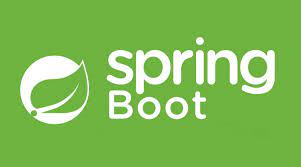
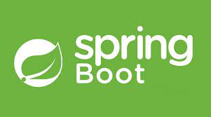

Tecnologias que conheço
 


Olá a todos, meu nome é Thayná Barreto, sou de São Paulo Capital, tenho 28 anos e sou formada em nutrição. Recentemente, decidi fazer uma transição de carreira para a área da tecnologia, uma área que considero desafiadora, porém recompensadora. Minhas experiências anteriores incluem atendimento ao cliente em produto bancário e estágios em nutrição. Essas experiências me proporcionaram habilidades valiosas, como resolução de problemas, negociação, organização, comunicação eficaz e trabalho em equipe.
Atualmente, estou focada em me tornar uma Desenvolvedora Fullstack. Tive o prazer de ser selecionada entre 3.000 candidatos para participar do Bootcamp da Generation, onde venho adquirindo habilidades práticas e conhecimento técnico necessário para ter sucesso nessa nova jornada. Destaco meu envolvimento em projetos práticos, onde simulei um e-commerce de eletrônicos usando Java, bem como participei de um projeto integrador que simula um e-commerce de venda de hortifrúti orgânicos, intermediando a relação entre o produtor e o consumidor, e realizei atividades práticas com banco de dados MySQL.
A experiência no bootcamp tem me proporcionado um ambiente colaborativo que estimula o aprendizado prático e o desenvolvimento de habilidades fundamentais para o mercado de trabalho em tecnologia.
Além disso, estou atualmente estudando inglês para estar preparada para colaborações em nível global. Tenho planos de iniciar uma graduação na área de tecnologia para aprimorar ainda mais meus estudos e estar preparada para os desafios que a indústria apresenta.Estou aberta a oportunidades para aplicar e expandir meus conhecimentos adquiridos através dos meus estudos e estou ansiosa pelas possibilidades que essa nova fase da minha carreira pode oferecer. Muito obrigada por dedicarem um momento para me conhecer.